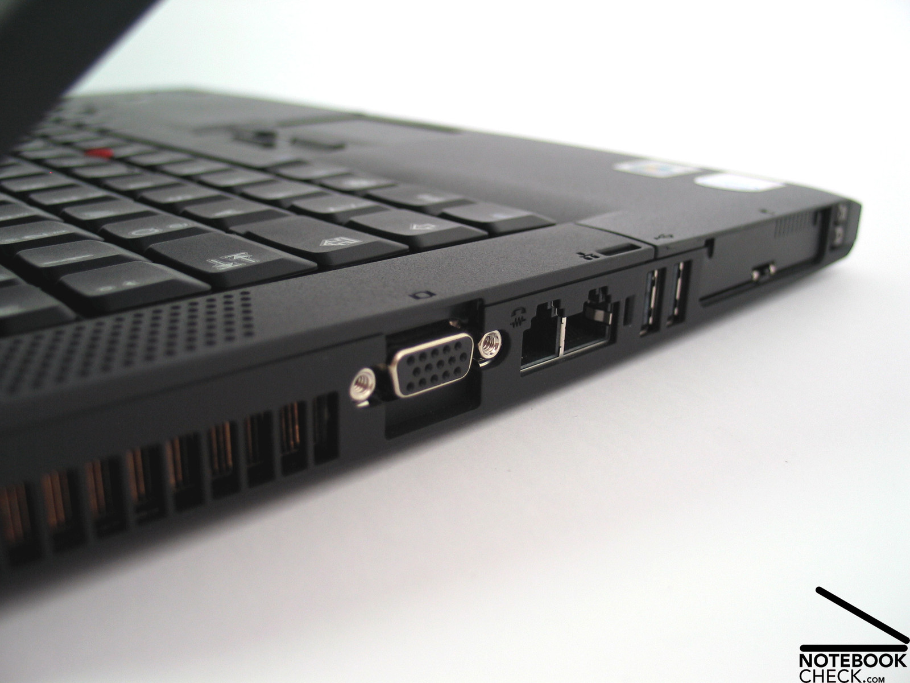
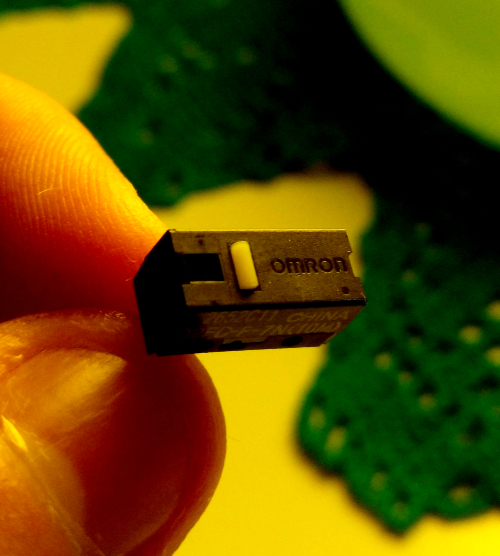

> Complaint to modern hardware
2024-09-29
By AIMMXI
The current state of technology
Since the dawn of humanity there has been major interest in techniques and ways to automate repetitive, dangerous or outright impossible tasks by human capabilities. Technology is the combination of such techniques, commonly in the form of machines or utensils and, in a way, it defines how advanced a civilization is.
We are in the 21st century and technology has come a long way, to the point where pretty much every aspect of our lives is conditioned by it. We rely on cars to move around, factories to produce food, electricity to carry daily tasks... This means that efficient, reliable, user friendly machines are crucial for the operation and development of society.
There is probably a general consensus that said technologies have dramatically progressed in recent years. However, due to certain modern design choices, there is room for debate.
The objective of this article is to list (In an informal and not very tidy way) some of the most important aspects that, from my point of view, hinder the evolution of technology, with special interest in those that screw customers.
Newer means better right?
Common sense says that technology should only improve as time goes on. Public knowledge increases and new discoveries are made, old technology gets revised, improved and so on. This is not always the case.
Take common household appliances as an example, fridges, microwaves, heating stoves and such haven't really evolved since they were first created. There are major benefits when a product's design peaks and no revisions are to be made, like cheaper prices as manufacturing processes are streamlined. In modern society this is a problem because in order to keep sales up there has to be innovation.
Corporations like to brag about innovation and new designs to sell more by creating a need, so to say. Even though the old appliance you already have might be perfectly fine for your use case, corporations will try to convince end users that a new product is way better because of some niche, barely useful, sometimes convoluted feature that ends up making the product worse.
For instance, absolutely everything nowadays comes with an app. The most merciful manufacturers let you use their product without it, but it is not uncommon to see technology that requires the app to work. This is detrimental to the user because:
- The application becomes a dependency. If the app stops working or is no longer available to download or install, the product is rendered useless.
- It is a privacy concern, as most apps require an account and the subsequent personal information that it involves.
- Usually, the devices receive updates through the app, which can cause downtime or even permanent bricks if something were to go wrong.
- Some devices have apps for the sake of it. It's much faster to use the actual device's controls.
- In some cases, there is a subscription involved which, again, can render the device useless if the corporation deems necessary.
Society is also a problem
Apps are not the only aspect in which new technology fails to improve it's previous generations. Another case worth mentioning is how trends and society largely affect a product's design and compromise some of its usability.
A clear example are ports in laptops / phones. Previously, manufacturers took care in providing heaps of ports so that the user could connect as many peripherals as needed. Right now, phones do not have headphone jacks and laptops that require dongles and docks are the norm.

There are plenty of other society and trend related gimmicks that are getting huge investments lately. I would say the most prominent ones are greenwashing and AI.
Greenwashing is an advertising technique that tries to make a product look more environment-friendly, when in reality no improvements in emissions or pollution have been achieved. It is currently happening with cars (specially with EVs), airplanes and holiday cruises (for some reason), fast food chains...
About AI, it can be summed up by saying that it is a very useful technology but has limitations that people do not understand. As a consequence, large advertising campaigns are focusing on including AI on absolutely everything, even if it means no actual benefit to the users.
The elephant in the room
My main issue with modern technology is something that has been discussed many times before and is present in most current consumer grade products. It is, of course, planned obsolescence.
In a society where people live paycheck to paycheck and cheapness is prioritized over quality, it comes as no surprise that companies want to optimize the cost effectiveness of a product to the maximum in order to increase profits, even if it means making a worse product. If anything, making a worse product that fails sooner means that the end user will buy new products more frequently, increasing profits even further.
This has been a problem for a very long time and it is spreading to a point where all consumer-grade products have planned obsolescence, no matter the brand, price range or supposed "quality". There is most likely no easy way to discern if a product is engineered to fail, therefore making it extremely challenging to buy something that is reliable. There is also no way of truly knowing the quality and durability of a product, not even with reviews, since most are either biased (Sponsored reviews, for instance) or short term reviews that do not mention durability or reliability. Quality nowadays has become meaningless.
Just to prove this point, here's a list of products that have failed me in the past:
- My Logitech G203 mouse's Chinese-manufactured Omron switches failed prematurely and had to be replaced by some TCCs from a Dell OEM mouse.
- The left speaker on my Razer Nari headset mutes if the volume wheel all the way up. This happens from day 1 and is quite common.
- Teflon pans. These are just short lived and will last nothing.
- A Samsung power adapter exploded while charging my phone for no reason.
- The OEM power adapter for my LG's monitor stopped working for no reason.
- Several SD cards have failed me. Most of them 3 or so years after being purchased and without heavy use.
- A Logitech 2500€ camera that I managed froze often because of poorly written software.
- The 2.0 TDI BKD engine in my Audi had to be replaced after it failed. The BKD model is known to fail extremely frequently.

All of those failed due to bad engineering, planed obsolescence or cheap manufacturing, none failed because of extensive use.
I find the whole planned obsolescence thing specially interesting with products that are advertised as environment-friendly because they do not help the environment at all as failures produce more landwaste. It is fake advertising and a clear case of the aforementioned greenwashing.
Additionally, there seems to be a trend where large corporations care less about their products. This makes sense as small ones need to care more about their customers in order to grow, while larger ones already have plenty of customers and they are not as concerned. Most large businesses are owned by investors which only care about results, and if more money means less happy customers, then so be it.
So, is there a solution ?
There is no definitive solution, but there are some tips that you can follow as a customer to avoid getting screwed over.
First and foremost, if you are willing to buy something, invest some time into researching well about the product and all the possible alternatives. The fact that some reviews are biased and that some quirks might not be mentioned should be kept in mind, but it is a good starting point.
If you do not need the bleeding edge, buy second hand products that are proven to be good and reliable. If a product has been in use for several years, all of it's faults should have already manifested. If it stands the test of time, it is a good product.
If you need new stuff, buy enterprise-grade (or military-grade) equipment. It is much more expensive than consumer-grade, but it is meant to be much more reliable as it is used in business-critical applications. The business laptops I have used have proven to be much more durable, repairable and upgradable than other consumer laptops that I have handled. Also, do not be fooled by fake military-grade advertising; some products use it rather loosely.
Occam's razor but for purchases. Simpler products are sometimes better products, no apps, no AI, no features that can add failure modes. Newer cars are more prone to failure due to the sheer amount of sensors, electronics and added complexity. My simple Casio W-59 watch will outlive most smartwatches because of its simplicity.
And lastly, avoid buying cheap products or products from abusive corporations. If the income losses are considerable because people notice that a brand's products suck, they will be more inclined to improve them.
Greedy corporations will keep taking advantage of poor buying habits to increase their benefits unless there is a change. It is in everyone's interest to change bad consumer practices to reduce the amount of bad products on the market and return to the age where buying tech meant getting problems solved, rather than having to worry about quality and reliability.